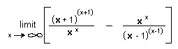
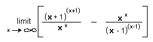

Ian finds patterns in the ratios
and differences
of powers of powers, and gets
an infinite sequence that approaches e.
A little background: From the 2nd grade when Ian first came to
The Math Program, he was always looking for patterns, using differences and
ratios. When Ian was here in about his 10th year in The Math Program, he worked
on powers of powers. Don gave him a copy of the article "Polypowers"
from Martin Gardner's book "Knotted Doughnuts and other Mathematical
Entertainments" (published by W.H. Freeman and Company, NY, 1986).
Subsequently, Ian was playing around with his calculator in his Physics class.
Here is the result of this "playing around".
In line 1 below, when x = 2, he found (2+1)(2+1) =
33 = 27 and for line 2 when x = 3,
he got (3+1)(3+1) = 44 = 256 and so on.
He then found the differences
of these powers.

Ian saw that
the differences where getting very big, like the powers themselves. So he
decided to look at the ratios of the powers. He
noticed that the ratios do not get
very big and the differences of these ratios
might lead to something.
He noticed that these differences on the right formed an infinite
sequence approaching e.
So his function is  and the
limit as x goes to infinity or = e
(WOW!)
and the
limit as x goes to infinity or = e
(WOW!)
Ian graphed his function in Mathematica,
an infinite sequence which approaches 2.71828... which = e
Great job Ian!!
Don had never seen this before, nor since.
Notice: e is also
defined as the limitn->inf(1+1/n)n
[read this as "the limit of (1+1/n)n as n goes to
infinity"] and can be
written as an infinite series
See Geoffrey's
work with powers of powers.
To
other discoveries
Back to Patterns
in Numbers
To order
Don's materials
Mathman home